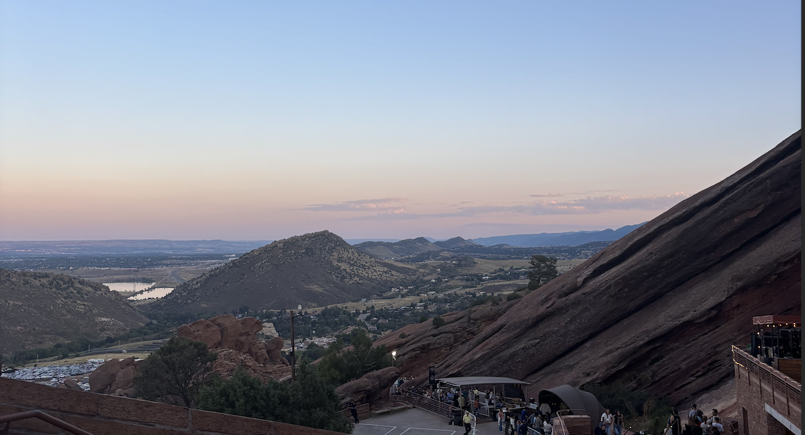
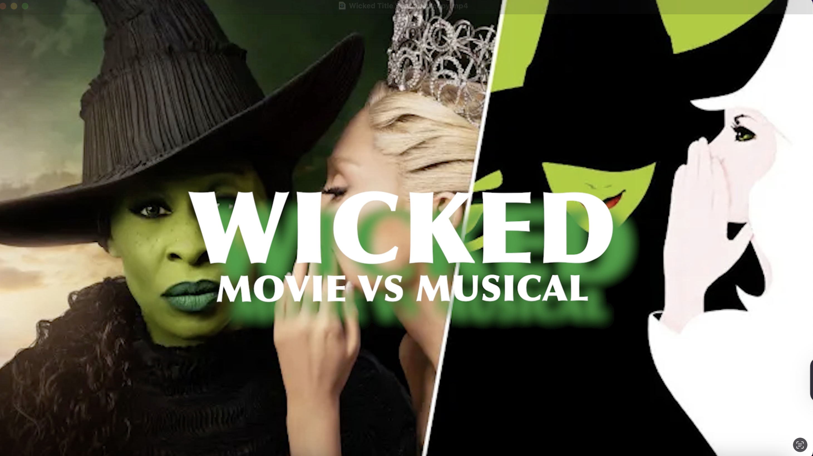
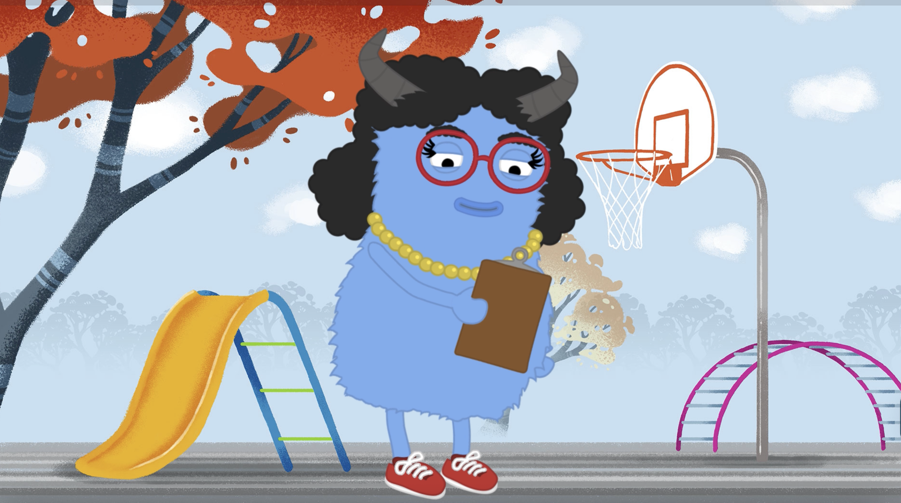
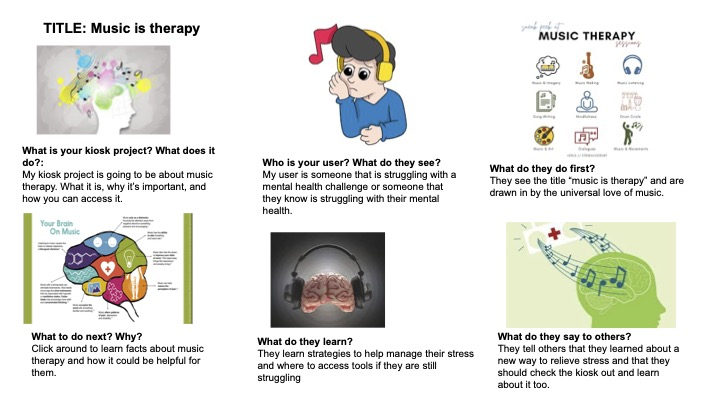

Phase 2/3: Expository Documentaries and Animation Effects
Image/Text Essay

We created an image essay using the software Adobe Premiere Pro. I based my image essay on my family trip to Denver to watch the musician Gregory Alan Isakov at Red Rocks.
Video Essay
Again in Premiere Pro, we created a video essay but this time using videos instead of images. I filmed b-roll around campus and blended the videos together.
Special Effects in Premiere Pro

We made a title sequence for our project in Premiere Pro. At the time, my project was about comparing and contrasting the Wicked movie vs musical, but my project has changed since then to music therapy.
Adobe After Effects Animation
We used a new software, Adobe After Effects Animation to create a title animation for our project. Again, my project at the time was comparing the movie vs the musical of Wicked, but it has changed to music therapy instead.
Adobe Character Creator

We experimented on the Adobe Character Creator software making animated characters to discuss what our projects are about.
User Experience Story Board

This is our user experience story board where we discuss and think about who our user is and use those characteristics to create an appropriate kiosk.
Phase 2/3 Course Goals
1. Foster the creative habits of mind
This phase of the course really allowed me to be creative and explore different fields and topics that I am interested in. I was able to experiment with the different types of tools and softwares such as Premiere Pro, Adobe After Effects, and Adobe Character Creator. Through these programs, I got to try out different designs and styles that I liked which allowed me to build up my creative abilities through the content I was working with as well as the layout. I really have learned a lot about the balance between creativity and following directions in order to complete an assignment, adhere to all the guidelines, while also making the project personal, engaging and thoughtful.
2. Engage with others in a workshop environment
These past projects have allowed me to engage with others in a workshop environment and develop my collaboration skills. This step in the creative process has really allowed me to deepen my understanding of what we are creating and further enhance my projects by asking others for their feedback and advice. While it is sometimes hard to ask for help, this piece of the class has really allowed me to step out of my comfort zone and become more comfortable in reaching out to others for help. Sharing my projects in the workshop environment has taught me that there is always room for improvement, and that engaging with others is a crucial part of a project since it allows different perspectives, opinions, and thoughts.
3. Think deeply about craft
Since the software we worked with was brand new to me, I was able to think deeply about my craft through this phase because I had to focus and truly understand what I was creating. With each project, I was able to improve my editing and technological skills, which is something I am proud of because when I first started, I had no idea what I was doing. The ability to choose the topic we were researching and creating projects about made me interested and engaged in creating a high quality piece of work. Since I enjoyed what I was creating, it made me care about what the final product looked like, making me think deeply about the work so that I was happy with the end result.
4. Engage in sustained research and skills development.
This phase was very research heavy which in turn, led me to engage in sustained research and skills development. The first week of research was a little difficult for me because it was challenging to find information on my topic, and once I did find that information, it was difficult to analyze and synthesize into my project. However, once I switched my topic and as I became more comfortable with the research process, I began to like researching and understood how to thouroghly analyze and apply the information I read into my project. Deciding to switch my topic was difficult, especially because that meant I had to start over with the research, but I am very happy with my choice because I am now researching meaningful information that will translate well into my final project.
5. learn to present your work
5. Learn to present your work
The end of this phase has really taught me how to present my work and improve my public speaking skills. We started off small, presenting our projects to others in a workshop environment, and then moved on to presenting in front of the whole class. Public speaking is not my favorite thing to do, but I am happy to have the opportunity to practice my presentation abilities in a small class that are all experiencing the same pressure. Learning how to present my work not only improves my public speaking, but it also ensures that I know what my project is about. Being able to explain to an audience what your work is about is a crucial skill and proves that you really know what you are talking about, so I am grateful that I have the opportunity to work on all of these aspects.

generated by Pitt Fuego
“Why make a spark when you can light a fire?